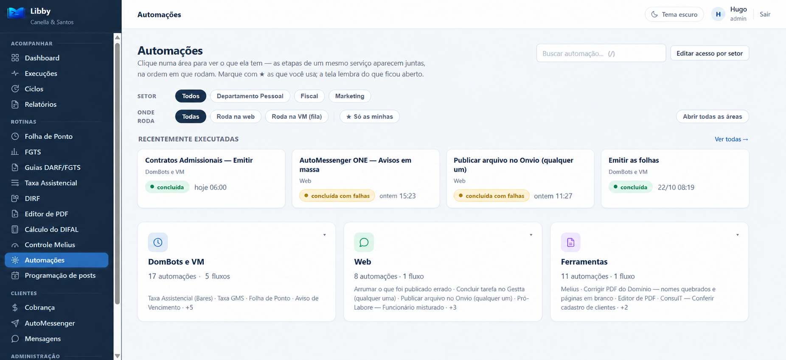
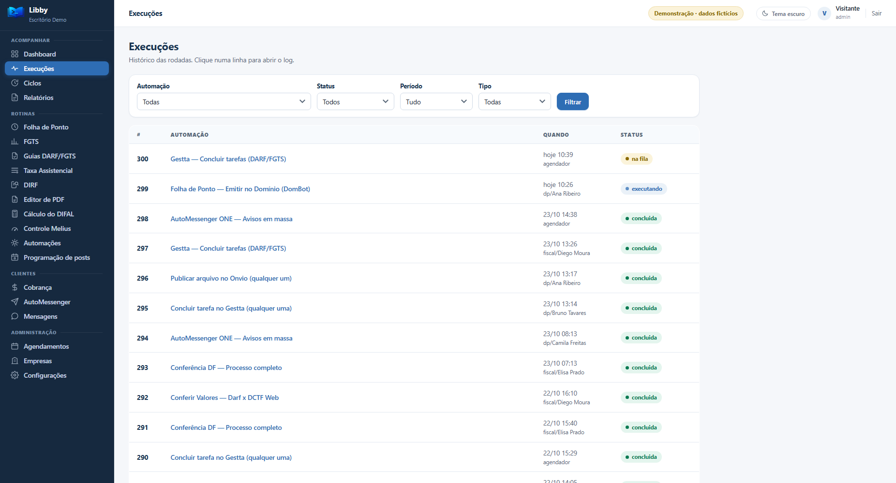
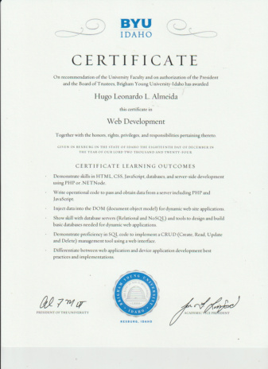
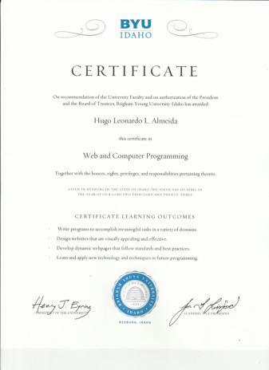
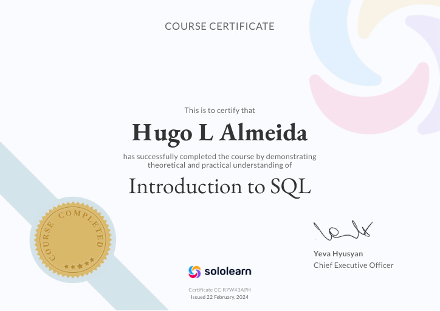
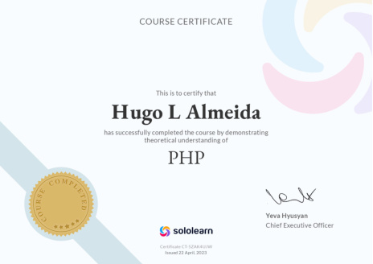
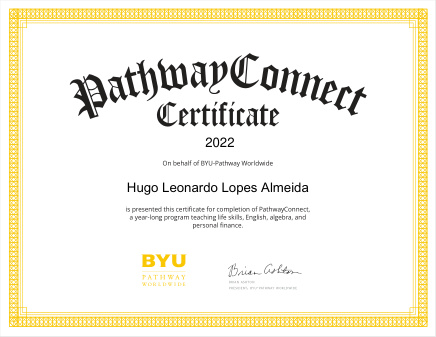
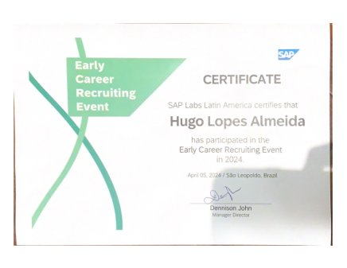
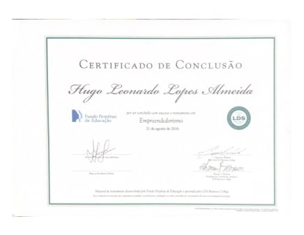
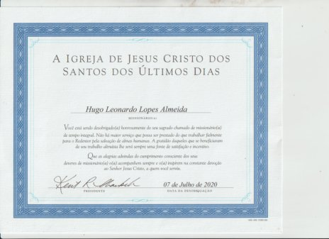

Biblioteca de Ebooks
Do QR code do evento à leitura. Conteúdo digital, acesso e gestão de leads em uma aplicação.
POSTGRESQL
CÓDIGO QUE ENTRA NA ROTINA.
AUTOMAÇÃO & PRODUTO
Uma biblioteca.
Muitas rotinas resolvidas.

Desenvolvo e mantenho a biblioteca que reúne minhas automações para DP, Fiscal e outras áreas.
O TRABALHO CONTINUA DEPOIS DO CLIQUE.
Rotinas no Domínio, Gestta e Onvio reunidas em uma biblioteca. Histórico e registros para entender o que aconteceu em cada execução.
MINHA CONTRIBUIÇÃO
Desenvolvimento e manutenção

DEMO PÚBLICA COM DADOS FICTÍCIOS · CÓDIGO PRIVADO
Do QR code do evento à leitura. Conteúdo digital, acesso e gestão de leads em uma aplicação.
Bots que leem avisos, organizam informações e notificam a equipe no Discord.
Pessoas, responsabilidades e atividades conectadas para apoiar a liderança. Projeto em evolução.
Explore cada projeto para conhecer o contexto, minha contribuição e as decisões técnicas.
Comecei em Direito, mas parei no segundo semestre. Sempre quis criar sites e outras soluções, e foi pelo BYU–Pathway que cheguei ao curso de Desenvolvimento de Software na BYU–Idaho. Meu primeiro site foi sobre One Piece.
Sou prático, direto e bem-humorado. Gosto de solucionar problemas e encontrar caminhos mais simples. Hoje busco contribuir com processos e sistemas que facilitem o trabalho das pessoas, com mais praticidade, tempo e efetividade.
Fora do trabalho, gosto de séries, filmes, produções coreanas e animes. Curto vôlei, futebol, tênis de mesa e totó. Também gosto de videogames e toco um pouco de piano e violão.
Desenvolvimento de Software · BYU–Idaho
Conclusão prevista: jan.–fev. de 2027


Brigham Young University–Idaho
Ver certificado (PDF)




LDS Business College · Fundo Perpétuo de Educação
Ver certificado (PDF)
A Igreja de Jesus Cristo dos Santos dos Últimos Dias
Ver certificado (PDF)Liderança de equipes de voluntários em Fortaleza, com treinamento, organização e colaboração entre diferentes nacionalidades.
Estágio em escritório de advocacia, apoiando documentos, agendamentos e acompanhamento financeiro.
Graduação na BYU–Idaho e formação em programação e desenvolvimento web, conectando o aprendizado a projetos práticos.
Estágio de TI na Canella & Santos Contabilidade: execução de fluxos em Power Automate e início do desenvolvimento de automações próprias, como o AutoMessenger em Python.
Atuação como Auxiliar de Desenvolvimento e Operações na Canella & Santos Contabilidade. Desenvolvimento autônomo de aplicações, integrações e automações reunidas na Libby.
Próximo marco: concluir o bacharelado em Desenvolvimento de Software na BYU–Idaho.
TEM UM PROCESSO PARA MELHORAR?
Aberto a conversar sobre desenvolvimento web,
automação e projetos freelance.